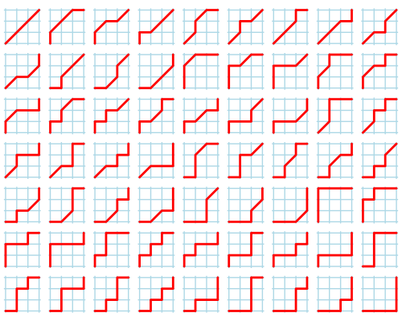

前置技能：二项式系数相关、生成函数基础。
这篇文章的主角是一个恒等式：
$$ \sum_{k \geq 0} \binom {m + n - k} m \binom m k = \sum_{k \geq 0} \binom mk \binom nk 2^k \qquad \left( m, n \geq 0 \right) \tag 1 \label 1 $$
我们将从多个角度来看待这个式子 $\eqref 1$。
首先，容易验证，这个式子对于其中的每一项是并不相等的。
比如，取 $n = m = 2, k = 1$，左边为 $\dbinom 32 \dbinom 21 = 6$，右边则为 $\dbinom 21 \dbinom 21 2^1 = 4$。
但是它们的加和的确相等，还是这个例子，当 $n = m = 2$ 时，
$$ LHS = \binom 42 \binom 20 + \binom 32 \binom 21 + \binom 22 \binom 22 = 6 \cdot 1 + 3 \cdot 2 + 1 \cdot 1 = \color {red} {13} = 1^2 \cdot 1 + 2^2 \cdot 2 + 1^2 \cdot 4 = \binom 20 \binom 20 2^0 + \binom 21 \binom 21 2^1 + \binom 22 \binom 22 2^2 = RHS $$
那是什么导致了它们的加和相等呢？于是，我们需要尝试去证明 $\eqref 1$ 式。
众所周知，有一个东西叫做二项式定理：
$$ \left( x + y \right)^n = \sum_{i \geq 0} \binom ni x^{n-i} y^i $$
当 $x = y = 1$ 时，有 $\displaystyle 2^n = \sum_{i \geq 0} \binom ni$。
注意到 $\eqref 1$ 式的右边恰好也有一个 $2^k$。如果你对二项式系数比较熟悉，你就应该明白，我们需要将其拆开，变为二重和式。
其次，还有一个前置技能叫做 Vandermonde 卷积，它的形式如下：
$$ \sum_i \binom n i \binom m {k - i} = \binom {n + m} k \tag 2 \label 2 $$
可以使用生成函数或者组合意义来证明。
有了这两个提示，证明 $\eqref 1$ 式应该不困难，读者可以自行尝试一下。下面给出证明：
尝试从右边推到左边。
\begin{align*} & \sum_{k \geq 0} \binom mk \binom nk 2^k \\ = & \sum_{k \geq 0} \binom mk \binom nk \sum_i \binom ki \\ = & \sum_{k, i} \binom mk \binom nk \binom ki \\ = & \sum_{k, i} \binom mk \frac {n!} {(n-k)! (k-i)! i!} \\ = & \sum_{k, i} \binom mk \binom ni \binom {n-i} {k-i} \\ = & \sum_i \binom ni \sum_k \binom mk \binom {n-i} {n-k} \\ = & \sum_i \binom ni \binom {m + n - i} n \qquad \left( \eqref 2 \right) \\ = & \sum_{k \geq 0} \binom {m + n - k} m \binom m k \end{align*}
证毕。
我们观察左端，它其实是一个三项式的形式，因此将其拆解后可以得到
$$ LHS = \sum_{k \geq 0} \frac {(m + n - k)!} {(m - k)! (n - k)! k!} \tag 3 \label 3 $$
如果你对组合意义 (网格图) 比较敏感的话，可以发现，它计数的就是网格图中从 $(0, 0)$ 到 $(m, n)$ 只允许向右、向上、斜向右上的路径数！
我们把这个数记为 $D(m, n)$，称为 Delannoy 数。
这是为什么呢？一开始的对 $k$ 求和，我们可以看作是枚举用了多少个 "对角步"，然后只需将 $m - k$ 个 "横步"、$n - k$ 个 "纵步" 和 $k$ 个 "对角步" 做一个排列即可，故为 $\dbinom {m + n - k} {m - k, n - k, k} = \dfrac {(m + n - k)!} {(m - k)! (n - k)! k!}$。
比如，$D(3, 3) = 63$，这 $63$ 种方案如下图所示：
由于刚才证明过，$\eqref 1$ 式两端是相等的。因此，$\eqref 1$ 式右端的 $\displaystyle \sum_{k \geq 0} \binom mk \binom nk 2^k$ 计数的也应该是 Delannoy 数。
那这个式子有没有一个好的组合解释呢？有的。
考虑每一种路径，它都可以写成一个长度不定的字符串，由 $\texttt H$ (Horizontal)、$\texttt V$ (Vertical)、$\texttt D$ (Diagonal) 构成。
比如，上图中第 $4$ 行第 $6$ 个方案可以记为字符串 $\texttt {HVVHD}$。
接下来，我们使用字符串的 "模式替换"，将一个方案字符串的所有 $\texttt {VH}$ 子串替换为 $\texttt D$，所得的方案还是一个合法的方案，同理，将所有的 $\texttt D$ 替换为 $\texttt {VH}$，所得的方案也是合法的。
因此，如果我们将每一种方案的 $\texttt {VH}$ 都替换为 $\texttt D$，我们就可以得到一个不以 $\texttt {VH}$ 作为子串的方案，我们将这种方案称为 "规范方案"。
设一个 "规范方案" 中有 $k$ 个 $\texttt D$，则这 $k$ 个 $\texttt D$ 中的每一个都可以选择替换成 $\texttt {VH}$ 或不替换。因此它对应着 $2^k$ 种普通方案 (是的，你已经见到 $2^k$ 了)。
考察一个 "规范方案" 在网格图中的实际意义。规范方案中的 $k$ 个 $\texttt D$ 对应着网格图中的 $k$ 个格子，它们的坐标是单调的 (即，如果 $x_A < x_B$，则 $y_A < y_B$)。因此这些格子就形成了一个顺序关系。
对于相邻两个格子，它们之间所走的方案是唯一的：首先，不能出现 $\texttt D$，因此只有 $\texttt H$ 和 $\texttt V$。而事实上只有串 $\texttt {HH} \cdots \texttt {HVV} \cdots \texttt V$ 是满足条件的，因为不能出现 $\texttt {VH}$ 作为子串。
因此，对于每一种选择 $k$ 个格子的方案，都能唯一确定着一个 "规范方案"。因此，我们只需要计数有多少种方案选择 $k$ 个格子，它们的横坐标递增，纵坐标递增。
由于它们的坐标是单调的，因此我们只需要选择 $k$ 个 "行" 和 $k$ 个 "列"，按照顺序就能确定一个 "选 $k$ 个格子" 的方案。
于是，方案数自然就等于 $\dbinom mk \dbinom nk$。注意到这种 "规范方案" 对应着 $2^k$ 种普通方案，因此对于一个 $k$，总方案数为 $\dbinom mk \dbinom nk 2^k$，最后对于所有 $k$ 求和即得。
当然，我们还可以从生成函数的方式理解：
设 $\displaystyle G(x, y) = \sum_{m, n, k} \dbinom mk \dbinom nk 2^k x^m y^n$，考虑对其进行求和，得到
\begin{align*} G(x, y) = & \sum_{m, n, k} \binom mk \binom nk 2^k x^m y^n \\ = & \sum_{n, k} \binom nk 2^k y^n \sum_m \binom mk x^m \\ = & \sum_{n, k} \binom nk 2^k y^n \dfrac {x^k} {(1 - x)^{k + 1}} \\ = & \sum_k 2^k \frac {x^k} {(1 - x)^{k + 1}} \sum_n \binom nk y^n \\ = & \sum_k 2^k \frac {x^k} {(1 - x)^{k + 1}} \frac {y^k} {(1 - y)^{k + 1}} \\ = & \sum_k \frac {(2 x y)^k} {(1 - x - y + x y)^{k + 1}} \\ = & \frac 1 {1 - x - y + x y} \sum_k \left( \frac {2 x y} {1 - x - y + x y} \right)^k \\ = & \left. \frac 1 {1 - x - y + x y} \middle / \left( 1 - \frac {2 x y} {1 - x - y + x y} \right) \right. \\ = & \frac 1 {1 - x - y + x y} \cdot \frac {1 - x - y + x y} {1 - x - y - x y} \\ = & \frac 1 {1 - x - y - x y} \end{align*}
再令 $\displaystyle H(x, y) = \sum_{m, n, k} \frac {(m + n - k)!} {(m - k)! (n - k)! k!} x^m y^n$ (参见 $\eqref 3$)，则有 (使用三项式定理)
\begin{align*} H(x, y) = & \sum_{m, n, k} \frac {(m + n - k)!} {(m - k)! (n - k)! k!} x^m y^n \\ = & \sum_{m, n, k} \frac {(m + n - k)!} {(m - k)! (n - k)! k!} x^{m - k} y^{n - k} \left( x y \right)^k \\ = & 1 + \left( x + y + x y \right) + \left( x + y + x y \right)^2 + \left( x + y + x y \right)^3 + \cdots \\ = & \frac 1 {1 - x - y - x y} \end{align*}
于是，我们从生成函数的角度再一次发现了 $G(x, y) = H(x, y)$，从而 $\eqref 1$ 式自然成立。
观察这个生成函数的组合意义，它不就是描述从 $(0, 0)$ 到 $(m, n)$ 的 $\texttt {HVD}$ (只允许向右、向上、斜向右上的) 路径数吗？这再一次印证了我们的观点。
总结一下，这篇文章中，我们使用了 (关于二项式系数的) 和式变换，组合意义，以及生成函数等一系列方法证明了同一个恒等式 $\eqref 1$，在过程中还引入了新的数——Delannoy 数。
总之，二项式系数、组合恒等式以及组合数学的联系等相关知识，是非常深厚的。只有不断地积累相关知识，才能发现更多神奇的性质。